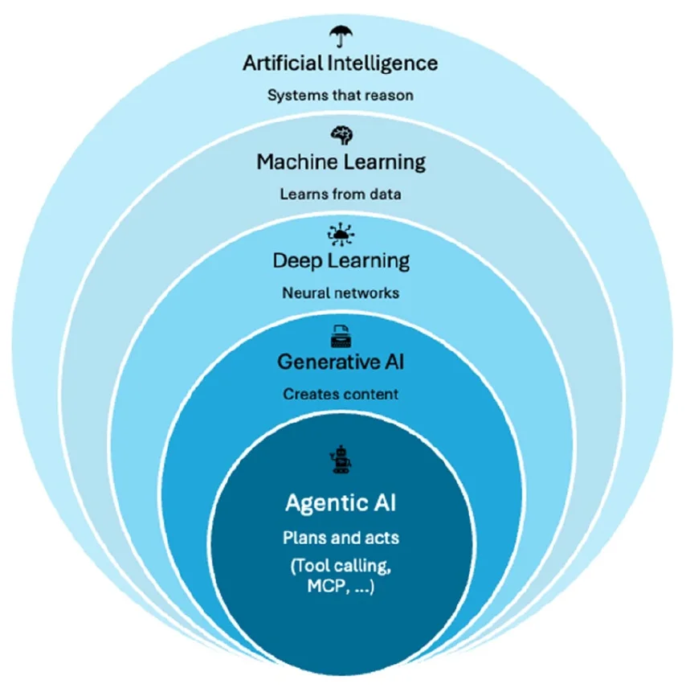
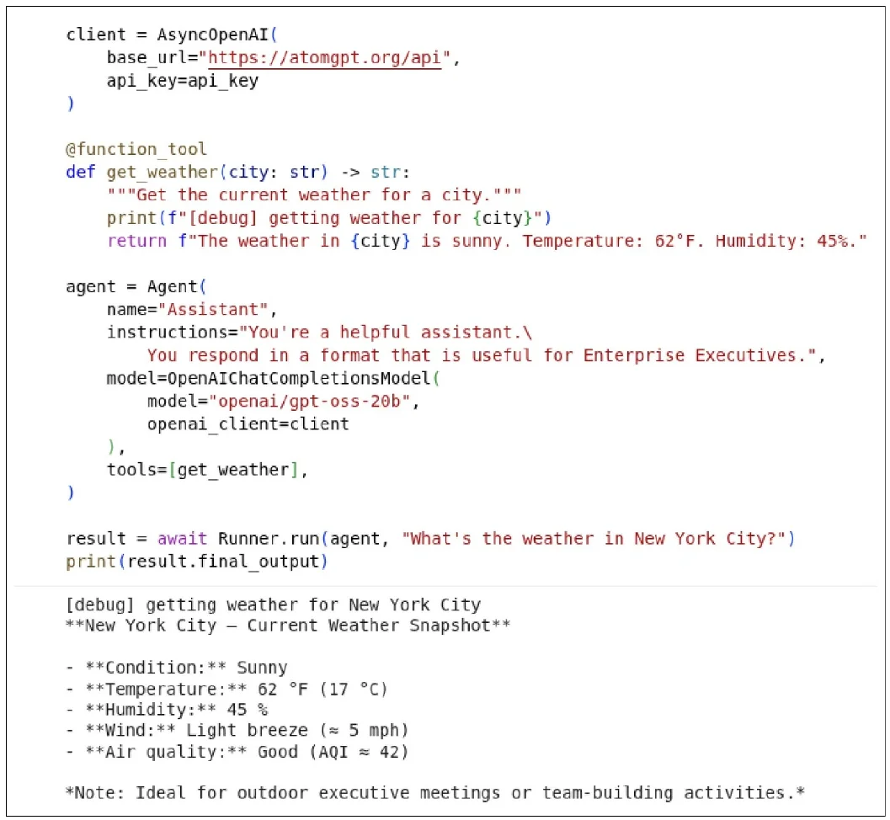
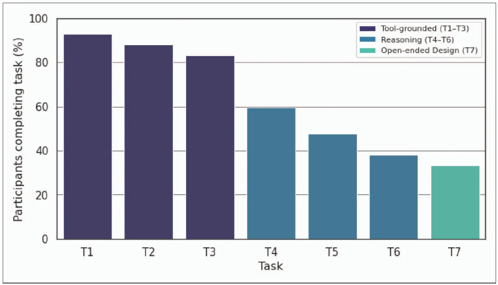

Lessons learned from the 2025 agentic AI for science hackathon
The rapid emergence of agentic AI presents new opportunities and challenges for accelerating scientific discovery through tool-augmented reasoning, autonomous workflows, and reproducible results. To explore these capabilities in a hands-on, community-driven setting, we hosted the Agentic AI for Science Hackathon 2025, which attracted 352 registered participants. The event was designed to benchmark, test, and extend agentic AI workflows across scientific tasks while remaining model-agnostic and lowering the barrier to entry for participants from diverse backgrounds. Participants engaged with a unified API ecosystem centered on the fully open-access AtomGPT.org API, implementing tool calling, asynchronous agents, and multi-model reasoning to solve problems spanning materials database retrieval, literature search, mathematical reasoning, and scientific workflow automation. The hackathon prompt emphasized reproducibility, transparent tool usage, and explicit agent-tool interaction, encouraging participants to move beyond single-prompt question answering toward structured, auditable pipelines. Outcomes included working agentic prototypes, identification of failure modes in contemporary chatbots, and actionable insights into best practices for agent design in scientific contexts. This paper documents the hackathon design, task structure, and key lessons learned, highlighting how hackathon-based evaluations can complement formal benchmarks and inform the development of robust agentic AI systems for science. Notebooks from participants who consented to public sharing are provided in the supplementary information. The GitHub repository for the hackathon is available at https://github.com/atomgptlab/aai4science.
The problem
Scientific work increasingly means coordinating many separate resources: simulation codes, materials databases, literature archives and machine-learning models. Agentic AI describes systems in which a language model does not just answer a prompt but plans a sequence of steps, calls external tools (a database query, a literature search, a calculator) and folds the returned results back into its reasoning.
Most benchmarks for language models measure narrow targets such as question-answering accuracy or code-generation success. They say little about whether an agent calls the right tool, recovers from errors, keeps its intermediate steps transparent, and produces results someone else can reproduce. The paper argues that hackathons, with open-ended and time-limited problems, can complement such benchmarks.
The paper also separates three modes of use that are often conflated under “AI for science”: language-only models used through a chat interface (the paper’s meaning of “chatbots”), agent-mediated workflows that wrap a model in a tool-calling execution layer, and retrieval- or code-augmented models in between. The hackathon concerns the second mode.

How the hackathon was set up
The Agentic AI for Science Hackathon 2025 drew 352 registered participants with backgrounds in materials science, physics, computer science and engineering. Everyone worked against the same open AtomGPT.org API (AGAPI), which follows the OpenAI interface. Because any compatible model can be swapped in by changing the base URL and key, the setup is model-agnostic, so differences between submissions reflect agent design rather than plumbing.
Tool use rests on function calling. At each step the model receives the request plus tool descriptions in JSON Schema and returns either an answer or a structured request to call a tool. A “Runner” executes the tool, feeds the result back, and repeats this plan–execute–observe loop until the model answers. Guided Jupyter notebooks demonstrated the pattern, letting participants focus on agent behaviour instead of setup.

Seven tasks, three kinds of skill
The tasks were deliberately heterogeneous and presented in a fixed order:
- Tool-grounded retrieval (T1–T3): report the current weather in Baltimore via a weather tool; report the total number of materials in the JARVIS-DFT database via a query tool; fetch the 10 most recent arXiv papers on the compound MgB2.
- Reasoning (T4–T6): an algebra problem with answer 240; the expected number of regions that 27 chords divide a disk into (answer 204); and a constrained min–max optimization whose correct solution lies on the boundary rather than where the gradient is zero.
- Open-ended design (T7): identify real cases where chatbots fail and propose a tool-based agent to fix each one.
T1–T6 were judged against ground-truth answers; T7 was judged against a rubric (a clear failure mode, a sound diagnosis, a plausible fix) rather than a numeric score. The reasoning tasks were chosen so that a single slip, such as a sign error or an unjustified modelling assumption, yields a wrong final answer.
What it found
Of the 352 registered participants, 42 submitted notebooks that the organizers scored. Completion was highest on the tool-grounded tasks and fell steadily through the sequence:
- Tool-grounded: T1 weather 39 of 42 (92.9%), T2 database 37 (88.1%), T3 literature 35 (83.3%).
- Reasoning: T4 algebra 25 (59.5%), T5 disk regions 20 (47.6%), T6 optimization 16 (38.1%).
- Open-ended design: T7 14 (33.3%).
- Most participants completed between three and seven tasks; completions clustered at roughly 50–60 minutes, with a long tail of later finishers.

The authors caution against reading these numbers as a measure of model capability. The order was fixed, the first three tasks had scaffolded notebooks in which running the demonstrated call could count as a completion, the hybrid event was time-bound, and each participant’s choice of model and prompting was not recorded. “Not completed” lumps together wrong answers, errors and unattempted tasks.
Lessons for agent design
From reading the submitted notebooks, the organizers drew three qualitative observations:
- Enforce schemas. In T2, notebooks that constrained the agent to a specific database schema did not hallucinate statistics, while notebooks without that constraint did. Tools that raise hard errors on bad API syntax put the error in front of the agent, letting it correct itself.
- Give metadata its own tool. In T3, agents that handled search results as undifferentiated text tended to present older papers as recent or to summarize content they never retrieved; a dedicated tool that separated structured metadata from prose tended to avoid this.
- Externalize intermediate state. In T4–T6, submissions that tracked constraints explicitly or called a computational tool for arithmetic were less prone to small slips propagating into wrong answers. The authors stress this is not a general verdict on language-only reasoning: current reasoning-enabled chatbots solve these problems directly.
Task 7 answers ranged from factual retrieval and numerical computation to literature synthesis and decision-making under uncertainty. The strongest recognized that reliability usually improves by changing how an agent executes, not by better prompting alone. Sixteen participants consented to sharing their notebooks, which include ideas such as an orchestrator agent over expert agents and a planner/researcher/critic design with memory.
Why it matters
Hackathons test things static benchmarks rarely reach: execution stability, failure recovery, transparency of intermediate steps and reproducibility under realistic constraints. The shared open API and guided notebooks also lowered the barrier for participants from graduate students to faculty.
The 2025 event used one participant driving one agent. The authors outline extensions along two separate axes, human teams and multi-agent systems, plus domain tracks such as agent-driven crystal-structure search, arXiv literature triage and interpreting X-ray diffraction patterns. They also propose an instrumented follow-up that records the model, settings, prompts and attempts for every task, so that future events can support controlled capability claims.
Cite
@article{lee2026lessons,
title = {Lessons learned from the 2025 agentic {AI} for science hackathon},
author = {Lee, Jaehyung and Neralla, Harichandana and Campbell, Charles Rhys and Zhang, Kent and Ajith, Akshaya and Ely, Justin and Jiang, Hua and Zhou, Zhijian and Ramlukan, Nikhil and Li, Xiaolong and Chiang, Huat Thart and Kulkarni, Arijit Mahesh and Thirumalaiswamy, Amruthesh and Pahi, Sampanna and Rahman, Md Habibur and Pratoori, Raghunandan and Huang, Erwei and Bhatti, Asif Iqbal and Prabhakaran, Prem and Kumar, Manish and Romero, Aldo H and Sun, Yu and Stiles, Christopher and Maheshwari, Chinmay and Liu, Peirong and Shi, Laixi and Choudhary, Kamal},
journal = {Machine Learning: Science and Technology},
volume = {7},
pages = {040501},
year = {2026},
publisher = {IOP Publishing},
doi = {10.1088/2632-2153/ae7f6a}
}